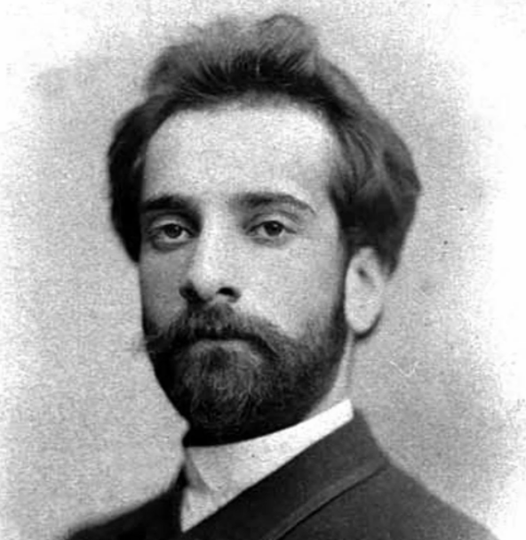

|  |
Левитан И.И. 1860–1900–
Исаак Левитан – русский художник, мастер «пейзажа настроения». Академик ИАХ (1898).
Исаак Ильич Левитан родился в посаде Кибарты Мариампольского уезда, Августовской
губернии (с 1866 года — Сувалкской губернии), в образованной обедневшей еврейской семье.
Датой рождения официально считается 18 (30) августа 1860 года. Отец Илья (Эльяшив-Лейб)
Абрамович Левитан (1827—1877) происходил из раввинской семьи местечка Кайданова,
примечательного сосуществованием еврейской и шотландской общин в Литве. Эльяш учился
в ешиве в Вильне. Занимаясь самообразованием, самостоятельно овладел французским и
немецким языками. В Ковно он преподавал эти языки, а затем работал переводчиком во
время постройки железнодорожного моста, которую вела французская компания.
|